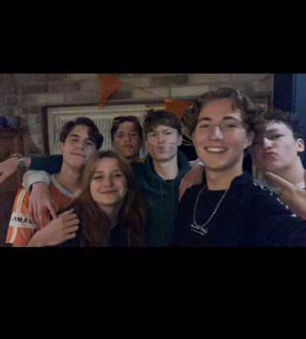
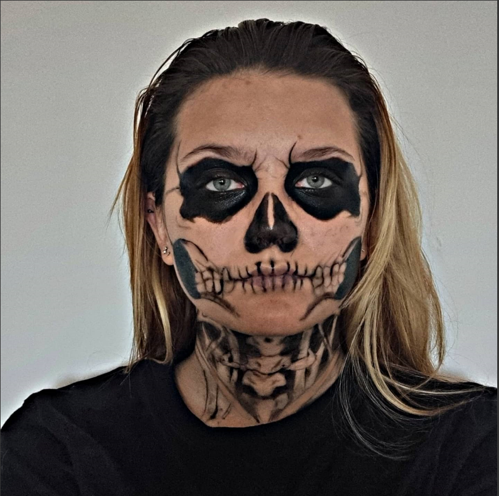
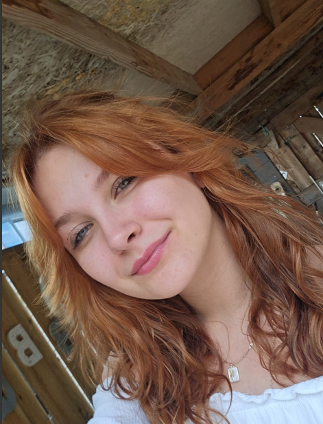
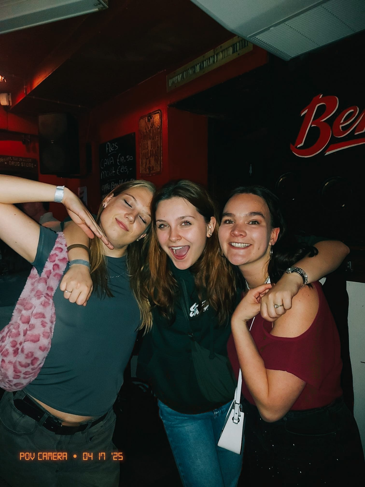
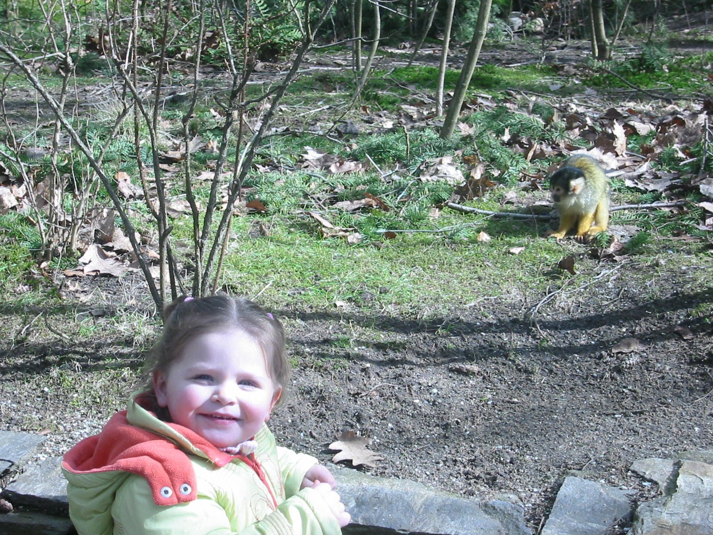
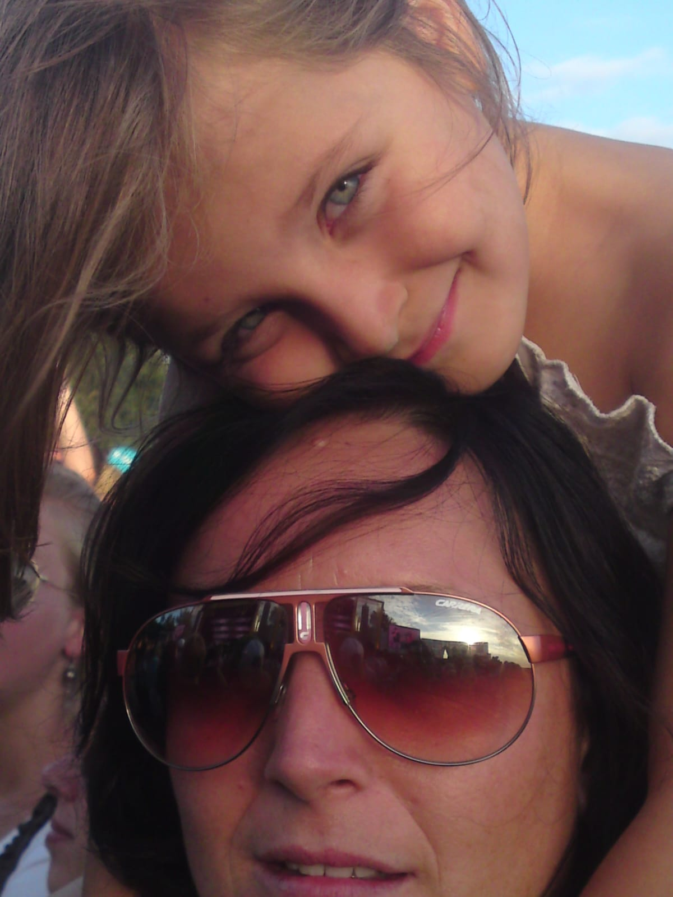

Ik doe veel special effect make-up
Good Morning!
Ik ga vaak naar concerten.
Ik heb 7 jaar op karten gezeten.
Ik heb een hond, een kat en een vogel.
Ik ben 21 jaar, en jarig op 4 december.
ik heb veel verschillende haar kleuren gehad.
*Weekly nerds*
-
Rule of least power
Kilian Valkhof
Stop using JS for that moving feature, from JS to CSS & HTML -
Rule of least power
Tijdens dit hoorcollege leerde ik over een principe over de kracht van js en css gaat. Ontwikkelaar Kilian Valkhof liet ons zien dat je met verrassend weinig code vaak méér bereikt. Minder foutgevoelig, sneller, toegankelijker — en toch volledig functioneel.
-

Betalen voor het internet
-
Betalen voor het internet
Tijdens een hoorcollege leerde ik over een onderwerp, dat Web Monetization heet. Dit houd in dat je per seconde een klein bedrag betaald voor het internet. Het klinkt als een eerlijke oplossing, maar is dat het ook? In deze tekst vertel ik wat ik hoorde, waarom het me aan het denken zette, en waarom ik er toch mijn twijfels bij heb.
-
Typografie
Roel Nieskens
-
Typografie
In dit hoorcollege ontdekte hoeveel invloed letters eigenlijk hebben. Niet alleen op hoe iets eruitziet, maar op hoe je het voelt. Van regelafstand tot schreef, alles draagt bij aan hoe je een website beleeft. In deze tekst neem ik je mee in wat ik leerde over de kracht van typografie, en waarom het veel meer is dan alleen “een mooi lettertype kiezen”.
-

GSAP
Cassie Evans, GSAP more than tweens
-
GSAP
Tot ik tijdens een hoorcollege kennismaakte met GSAP — de GreenSock Animation Platform. Zag ik dat je makkelijk animaties kan maken, die meebewegen met je scrollgedrag. En dat alles met verrassend weinig code. In deze tekst vertel ik hoe GSAP mijn beeld van webanimaties veranderde, wat je ermee kunt maken en waarom het zoveel meer is dan ‘wat bewegende elementen’.
-

Design for flexibility
Nils Binder
-
Design for flexibility
Tijdens een hoorlezing vertelde frontend developer Nils Binder over zijn werk bij 9elements, en hoe hij techniek en creativiteit laat samensmelten. Zijn verhaal gaat niet alleen over flexibele layouts en moderne tools als Figma, maar vooral over samenwerken, kijken met aandacht en durven loslaten.
-

Imperative or declarative
Jeremy Keith
-
Imperative or declarative
Jeremy Keith neemt je mee in een verrassende vergelijking tussen klassieke muziek en jazz. Imperatief of declaratief: het zegt iets over hoe we omgaan met controle en loslaten. In deze tekst ontdek je wat dat betekent voor HTML, CSS en JavaScript. Een frisse blik op webontwikkeling die aanzet tot nadenken én anders kijken.
-

Animaties met karakter
Julia Miocene
-
Animaties met karakter
Wat als je met alleen CSS een karakter tot leven kunt brengen? Julia Miocene, liet precies dat zien tijdens haar lezing. Zonder JavaScript,alleen HTML en CSS. In deze tekst ontdek je hoe zij denkt, bouwt en vertelt. Laat je verrassen door een vernieuwende kijk op stijl en beweging.
-

Circuit bending
Rosa
-
Circuit bending
Tijdens een hoorcollege over creatief coderen en circuit bending vertelde Rosa Schuurman over spelen met technologie en loslaten van regels. Voor sommigen klinkt dat als vrijheid. In deze tekst lees je een eerlijke zoektocht naar betekenis, structuur en aansluiting in een wereld vol mogelijkheden. Een reflectie die laat zien dat niet elke inspiratiebron direct hoeft te passen.
-
Project Fugu
Niels Leenheer
-
Project Fugu
Wat als een kassasysteem geen programma op je computer is, maar gewoon draait in de browser? Tijdens een hoorcollege liet Niels Leenheer precies dat zien, en het veranderde mijn kijk op wat webtechnologie eigenlijk kan. In deze tekst ontdek je hoe de scheidslijn tussen web en desktop vervaagt, en wat dat betekent voor jou als toekomstige ICT’er.
-
Accessibility meetup
Nienke de Keijzer
-
Accessibility meetup
Wat betekent digitale toegankelijkheid écht? Sprekers Erik Kroes en Nienke de Keijzer lieten zien dat het ontwerpen van toegankelijke websites draait om mensen en niet om regels. Hoe maak je digitale producten die écht voor iedereen werken? En waarom is dat geen extraatje, maar de kern van goed ontwerp?
- Legal
- Privacy Center
- Privacy Policy
- Cookies
- About Ads
- Accessibility
© 2023 Spotify AB